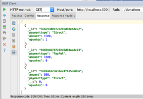

Assignments
Assignment-1
Assignment-2
Overview & Background
Module Overview
Introduction to Web Apps
Introduction & Background
JavaScript Overview
Introdcution to REST
Web Apps Overview
Setup
JS.Lab-01
JS.Lab-02
Web App Development 2
All slides's in Module
Assignment-1

Assignment-2
Module Overview
JavaScript Overview
Introdcution to REST
Web Apps Overview